【行者无疆 言念潇湘】乾坤布热血 肝胆照昆仑
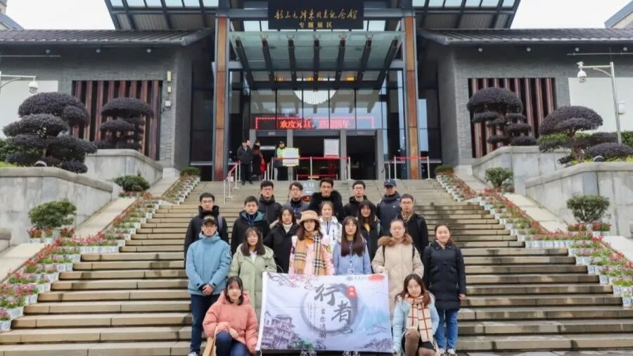
以生命书写壮志
用岁月诉说刚强
凭胸怀广纳家国
借气魄承载辉煌
赎苍生于凡世
治社稷于苍凉
救黎民于水火
拯四海于蛮荒

战士胸襟文人慨，党人修养哲人怀
穿越历史的长廊，一张张照片、一件件文物，都在诉说着一段段不可磨灭的故事，淡黄的灯光下，映照的是刘少奇走上革命道路的光辉历程，是他改名卫黄的振兴决心，是他远赴莫斯科留学的坚毅信仰。遒劲有力，笔墨横姿，“工人运动，青年运动”八个大字在团员履历调查表上耀眼醒目；唇枪舌战，不畏艰难，十三项安源路矿工人复工条件跃然纸上。
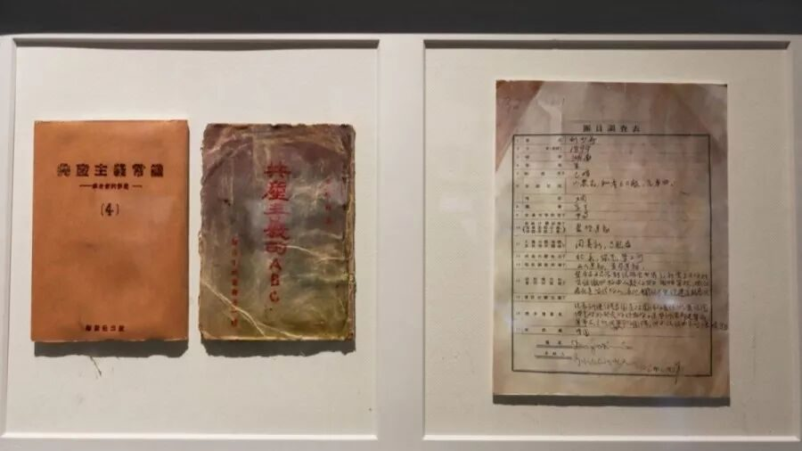
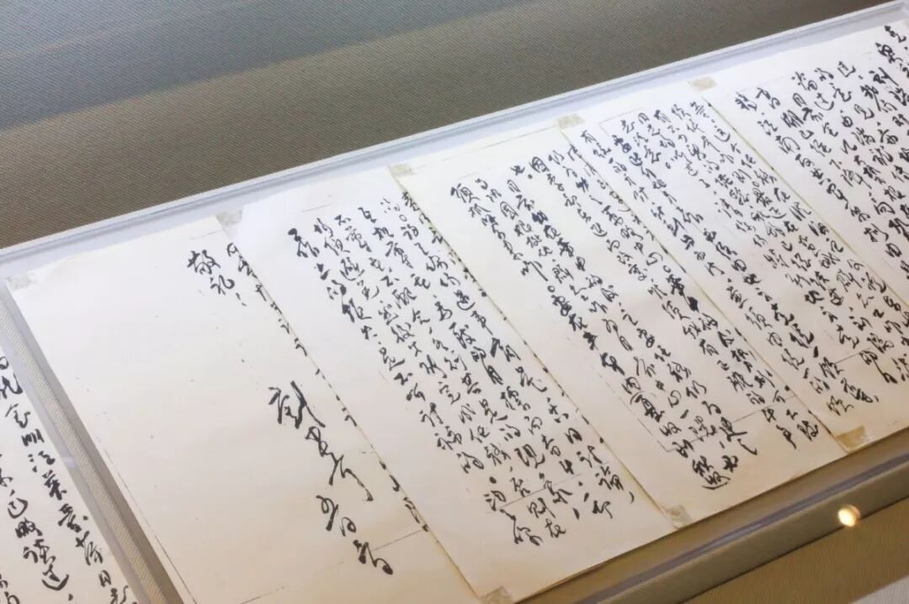

“爸爸是人民的儿子，你们也一定要做人民的好儿女，永远跟着党，永远为人民。”这是刘少奇送给儿女的一句话。人道之兴，必由夫妇，父之爱子，教以义方。刘少奇是伟人，更是一家之主，是子女的严父，上行而下效，刘少奇一直在用实际行动成为孩子们的榜样。
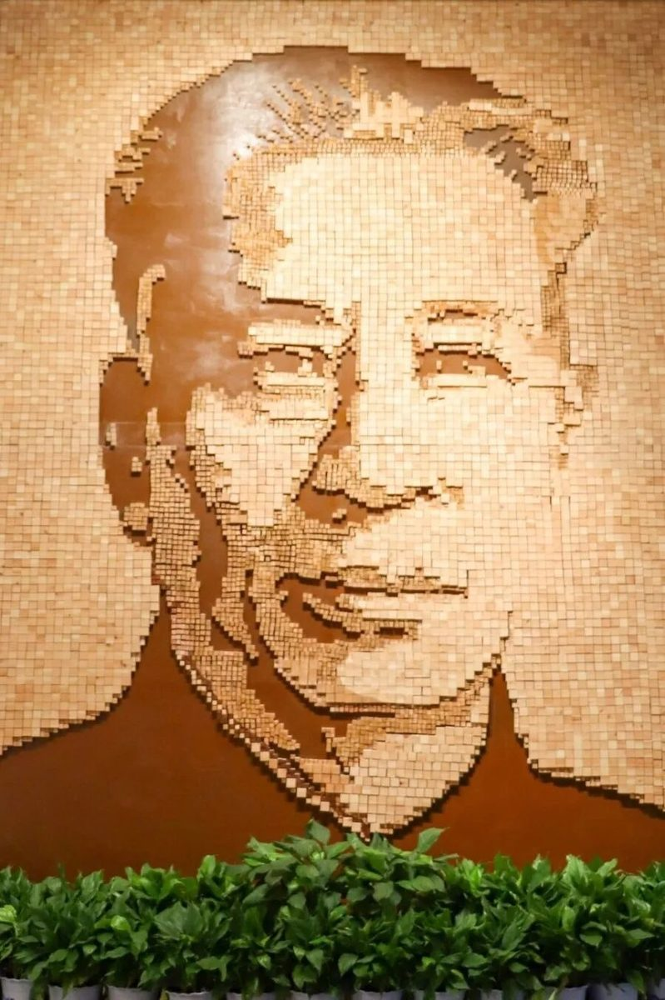
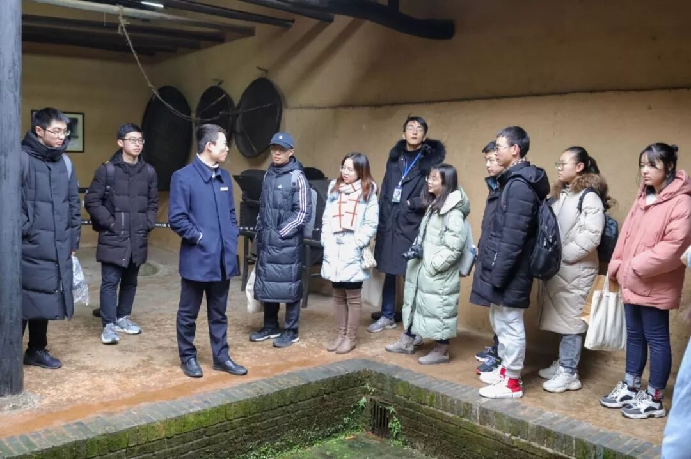
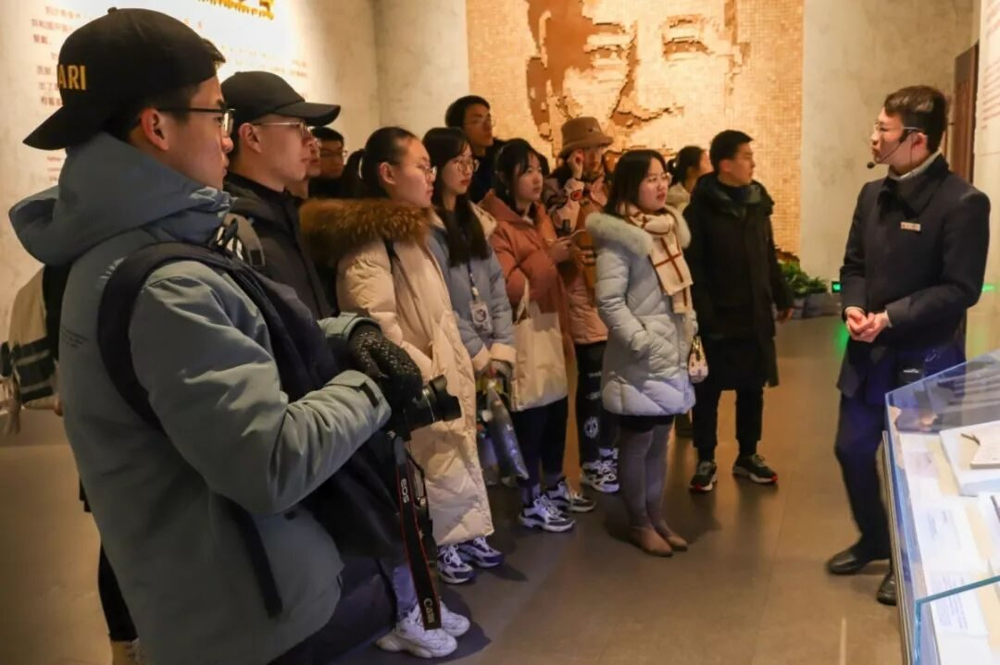
一半青瓦、一半茅草、一口水井、一抹低山。走进四合院式的故居，糠壳泥饰的粉墙上挂着一幅刘少奇母亲的画像，透过斑驳的印记，我看到刘少奇面对母亲下跪却依然选择挽救四万万同胞的煎熬，看到他在遗嘱中写下把自己的骨灰撒向大海的坦然。面向大海，春暖花开，从未后悔，自始至终。
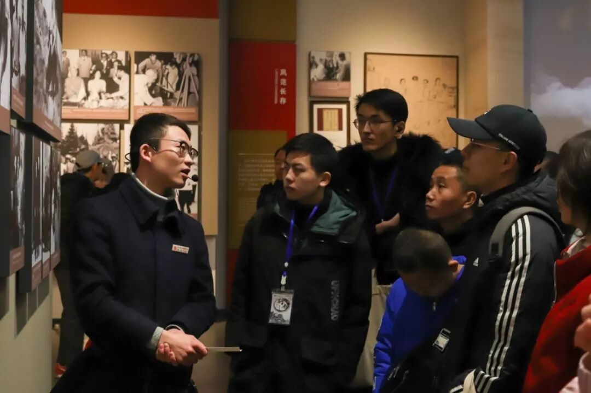
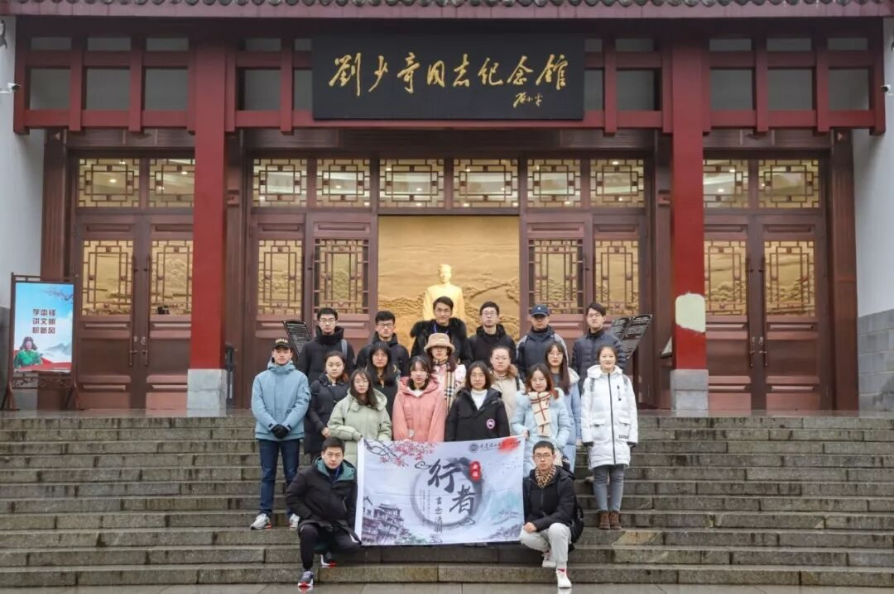

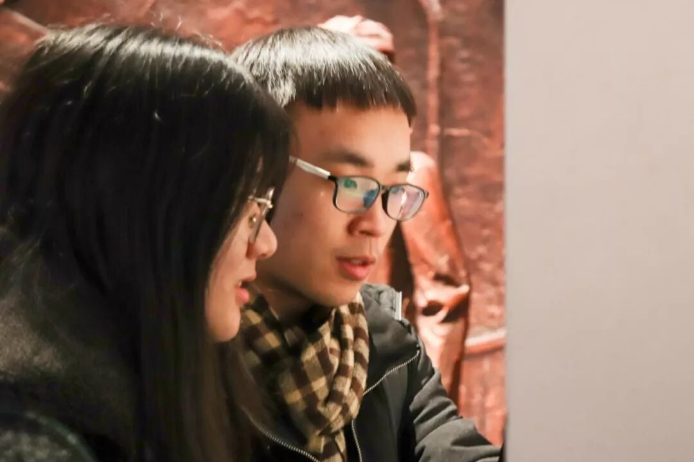


胸中有誓深于海，肯使神州竞陆沉
时空再远，一脉相连。跟随讲解者的脚步，走进毛主席的生活，顷刻间主席更具亲和力地呈现在行者们的眼前。
一笔一墨、一画一物，展现的是毛主席白一根头发，胜三大战役的呕心沥血；是睡衣补了又补，裤子接了又接的俭朴生活；是长征途中扔掉衣物，也不舍得扔掉一本书的孜孜不倦；是笔走游龙，豪迈写词的雅情逸趣。
“孩儿立志出乡关，学不成名誓不还。埋骨何须桑梓地，人生无处不青山。”伟大领袖高瞻远瞩的政治远见、炉火纯青的斗争艺术、坚定不移的革命信念和勇于开拓的非凡魄力让中华大地换了人间。毛主席的思想、名字、风范将永远激励无数青年为实现中华民族伟大复兴的中国梦不懈奋斗。
“世界是你们的，也是我们的，但是归根结底是你们的，你们年青人朝气蓬勃，正在兴旺时候，好像早晨八、九点钟的太阳，希望寄托在你们身上。”
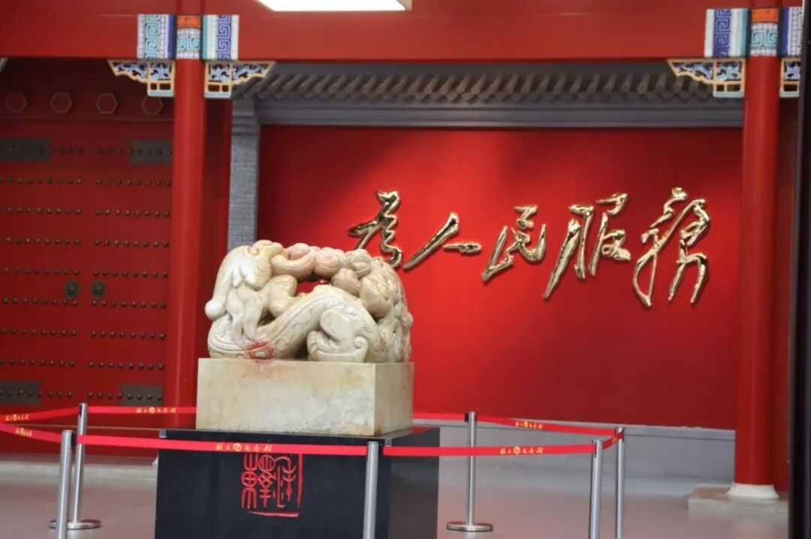
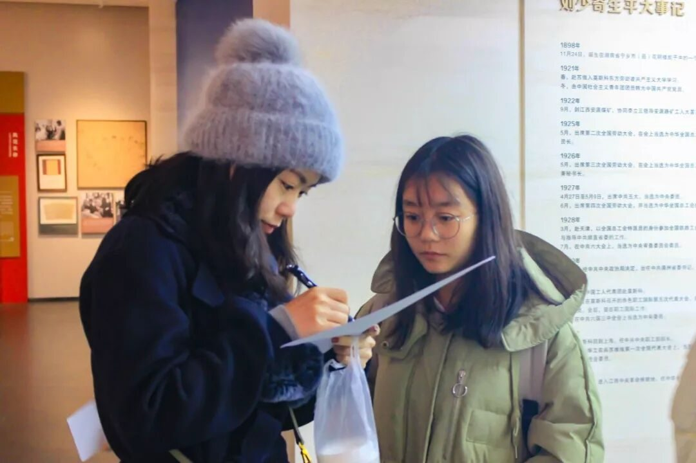
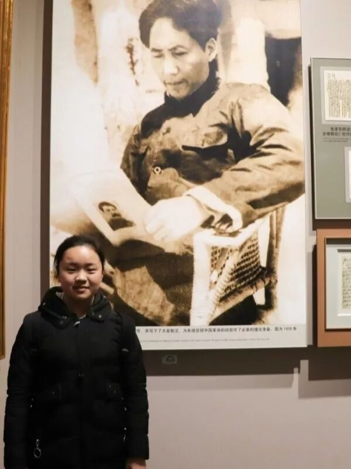
侠之大者，为国为民
与天地齐，万世景仰

俱往矣 数风流人物 还看今朝
定不负所望 我辈当自强
来源 | 行者无疆实践团
图片 | 陈辉 米鑫
文字 | 王姿然
排版 | 吕丰元
审核 | 段智然 康艳虎 黄玲
行者无疆实践团
QQ：2758025831

随行者一起认识世界
长按二维码